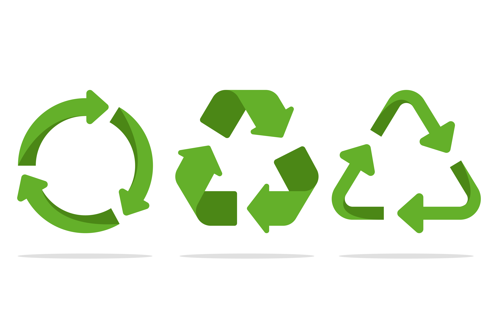

Quiz de Sustentabilidade
Hábitos sustentáveis para praticar no dia-a-dia
Separe o lixo
Uma das principais medidas para reduzir a degradação ambiental é reciclar o lixo que geramos diariamente. Por isso, os resíduos devem ser encaminhados ao destino correto.
O material orgânico (restos de comida) pode ser aproveitado no processo de compostagem. Assim, vira adubo para novas plantações.
Já o material seco (plástico, metais, vidro e papel) deve ser descartado. Em muitas cidades brasileiras, existem cooperativas que recolhem esse lixo e ganham dinheiro vendendo-o para usinas de reciclagem.
Preste atenção a itens como baterias, lâmpadas, equipamentos eletrônicos, cosméticos, medicamentos e óleo de cozinha. Eles são altamente poluentes! A melhor alternativa é levá-los a ecopontos específicos – como supermercados, farmácias ou unidades especializadas.
Economize água
Você sabia que um banho de 15 minutos pode gastar de 45 a 135 litros de água? A informação consta no site da Companhia de Saneamento Básico do Estado de São Paulo (Sabesp).
A solução para economizar é simples: diminua o tempo embaixo do chuveiro. Cinco minutos costumam ser suficientes para realizar a higiene pessoal.
Também vale fechar o registro sempre que possível. Na hora de se ensaboar, por exemplo, não precisa deixar a água correndo, né?
Faça o mesmo ao escovar os dentes ou lavar a louça. A torneira só deve permanecer aberta na hora de enxaguar. Desse modo, você colabora na preservação dos recursos naturais e ainda poupa uma boa grana ao fim do mês!
Deixe o carro na garagem
Economia sustentável também tem a ver com saúde. Prova disso está na nossa próxima dica: trocar o automóvel pela bicicleta.
Às vezes, por comodidade, usamos o carro para percorrer pequenas distâncias dentro do município. Esse trajeto poderia ser feito em cima da magrela.
Repare nas vantagens. Você:
- poupa combustível, o que é bom para o bolso e para o meio ambiente;
- mantém o ar da cidade mais puro;
- não perde tempo em engarrafamentos;
- não gasta com estacionamento;
- pratica atividade física, conquistando mais força e disposição no dia a dia.
Com tantos pontos a favor da bike, fica difícil arranjar uma desculpa para ir de carro até a esquina, hein?
Economize energia elétrica
Quando o assunto é a conta de luz, qualquer detalhe pode trazer resultados imediatos. Primeiro, tire da tomada todos os eletrodomésticos que não estiverem em uso. Até mesmo a luzinha vermelha de standby consome eletricidade.
Depois, priorize a manutenção dos equipamentos. Verifique se a borracha da geladeira está vedando bem ou se a limpeza do ar-condicionado está em dia. Em ambos os casos, o mau funcionamento do aparelho demanda esforço extra do motor, o que eleva os custos de energia elétrica.
Por fim, opte por soluções mais econômicas. Lâmpadas de LED, embora custem mais caro, duram bastante e gastam menos luz. Ou seja: são ótimas para economizar dinheiro no longo prazo.
Reutilize embalagens
Você é daquelas pessoas que já guardaram pote de requeijão para utilizá-lo como copo? Parabéns: os hábitos sustentáveis fazem parte de sua rotina.
Essa não é apenas uma estratégia para quando a grana está curta. Reutilizar objetos colabora para que a gente consuma menos. Logo, o lixo que geramos em nossas casas também tende a se reduzir.
Embalagens de vidro são ótimas para armazenar grãos, doces e geleias. Basta lavá-las com água quente antes do uso.
Para as garrafas PET, uma sugestão é transformá-las em vasos de plantas. Corte o topo, faça uns furos na base e pronto: o que iria para o lixo vira berço para novas mudinhas.